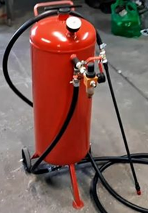

MAQUINA ARENADORA
El arenado o chorro de arena es una técnica industrial de limpieza de superficies basada en la proyección de arena conjuntamente con aire a presión. La arena era el abrasivo tradicional, de donde originó el nombre. Mundialmente se conoce también como sandblasting.
En la actualidad hay muchos otros abrasivos que la han sustituido, porque el proceso de arenado es considerado altamente nocivo para la salud de los operarios.
Los sistemas modernos de proyección de partículas por aire comprimido, equipos de arenado o granallado, trabajan indistintamente con cualquier tipo de abrasivos. Esto permite, utilizando un mismo equipo, seleccionar el abrasivo adecuado para cada tipo de trabajo.
Es fundamental saber que tanto los equipos de granallado, arenado o Sandblasting que arrojan abrasivos a alta velocidad requieren normas de seguridad y equipos de protección especialmente formulados y diseñados para realizar estas tareas. Cuando los procesos y métodos de trabajos son los adecuados, el trabajo es seguro. Sin embargo, cuando no se toman los recaudos necesarios, las personas que trabajan en el proceso pueden sufrir serias consecuencias que podrían evitarse siguiendo una serie de pautas y recomendaciones apropiadas.
¿Por qué es necesario realizar una correcta preparación de superficie previo a la aplicación de un revestimiento?
Un elevado porcentaje de revestimientos aplicados sobre superficies metálicas (pintura, caucho, metalizado, enlozados, etc.) no rinde los resultados esperados debido a una incorrecta preparación de la superficie a ser protegida.
La aplicación de cualquier revestimiento sobre una superficie metálica requiere previamente una correcta preparación superficial con el fin de obtener la mejor resistencia en el tiempo a la corrosión asegurando una correcta rugosidad que permita una correcta adherencia entre la superficie y el revestimiento aplicado.
Una correcta preparación de superficie depende:
Del tipo de material base a ser tratado; (acero al carbono, acero inoxidable, aluminio, otras aleaciones leves, etc.)
Del tipo de revestimiento a aplicar; (origen, espesor, dureza, etc.)
Del tipo de maquina arenadora o granalladora utilizada; por turbina o por aire comprimido